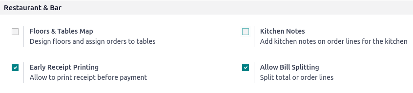

Listas de precios¶
Con las listas de precio podrá ajustar los precios de los productos según diversos criterios de manera automática. Por ejemplo, puede configurar precios específicos para el Punto de venta, crear periodos de descuento temporales, recompensar a clientes específicos, u ofrecer descuentos cuando ordena una cantidad específica de productos.
Configuración¶
Vaya a los ajustes generales del Punto de venta y asegúrese que la opción Listas de precios flexibles está activada en la sección Precios.
La opción que debe de activar para tener reglas de precio simples fijas por producto es Múltiples precios por producto. Seleccione Reglas de precio avanzadas (descuentos, fórmulas) para aplicar reglas de precios a varios productos al mismo tiempo y para que el cálculo de los precios sea dinámico con descuentos porcentuales o fórmulas más complejas, además de configurar precios fijos.
Nota
El tipo de lista de precio seleccionado se aplica a toda la base de datos, incluyendo las aplicaciones Ventas y Comercio electrónico.
Crear listas de precios¶
Vaya a y haga clic en Nueva o seleccione una lista existente. La configuración de la lista de precios depende de la opción de listas de precios seleccionada.
Múltiples precios por producto¶
Cuando configura una lista de precios para que use la opción Múltiples listas de precio por producto podrá usar varios precios fijos para diferentes productos o sus variantes dependiendo, si es necesario, en una o más condiciones. Para agregar una nueva regla a una lista de precios:
Haga clic en Agregar una línea y seleccione un producto y sus variantes si es necesario.
Agregue las condiciones:
la cantidad de producto que tiene que alcanzar con la columna Cantidad min.;
las columnas Fecha de incio y Fecha de finalización representan un periodo determinado en el que la lista de precios se debe aplicar.
agregue el Precio que se debe aplicar cuando se cumplan las condiciones (si alguna se cumple).

Reglas de precios avanzadas¶
Cuando configura una lista de precios para que use la opción Reglas de precio avanzadas (descuentos, fórmulas), es posible usar, además de los precios fijos, descuentos y aumentos de precios porcentuales y fórmulas. Para agregar una nueva regla de precio a la lista de precios, haga clic en Agregar una línea. En las ventanas emergentes:
Seleccione un método de Cálculo:
Precio fijo para configurar un precio fijo nuevo (similar a la opción Múltiples precios por producto.
Descuento para calcular un porcentaje de descuento (e.g.,
10.00%) o aumento de precio (e.g.,-10.00%).Fórmula para calcular el precio según una fórmula. Es necesrio para definir en qué se basa el cálculo (Precio de venta, Costo, u Otras listas de precios). Entonces podrá:
Aplicar el porcentaje de Descuento o aumento de precio.
Agregar una Tarifa adicional (e.g., $
5.00) o quitar una cantidad fija (e.g., $-5.00).Definir un Método de redondeo, esto se hace forzando que el precio después del Descuento sea un múltiplo del valor configurado. La Tarifa adicional se aplica después.
Example
Para que el precio final termine con
.99configure el Método de redondeo a1.00 y la :guilabel:`Tarifa adicionala-0.01.Especifique los Márgenes mínimos (por ejemplo, $
20.00) y máximos (por ejemplo, $50.00) de ganancia para cálculos según el Costo.
Seleccione en qué productos debe aplicarse la regla de precios:
Todos los productos
una categoría de producto
un producto
una variante de producto
Añada condiciones, por ejemplo, puede establecer un cambio de precio una vez que se alcance una cantidad determinada, esto se puede hacer utilizando el campo cantidad mínima.

Seleccione la lista de precios¶
Vaya a la configuración específica del PdV y añada todas las listas de precios disponibles en el campo disponible. Después, establezca su lista de precios predeterminada en el campo predeterminado.
Cuando abra una sesión de PdV <pos/session-start>, haga clic en el botón listas de precios y seleccione la lista de precios deseada de la lista.

Nota
Para que aparezca el botón de lista de precios se deben seleccionar varias listas de precios.
Si se selecciona una lista de precios en un pedido del PdV y no se cumplen sus condiciones, el precio no se ajustará.
Truco
También puede configurar una lista de precios para que se seleccione automáticamente una vez que se establezca un cliente específico. Para ello, vaya al formulario del cliente y cambie a la lista de precios preferida en el campo lista de precios de la pestaña ventas y compra.